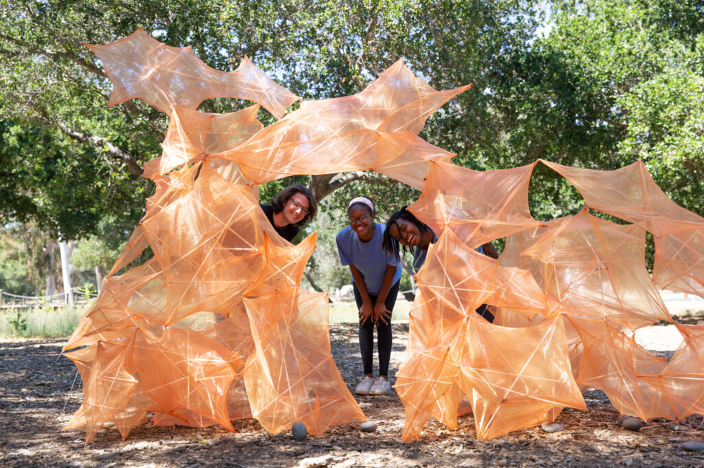
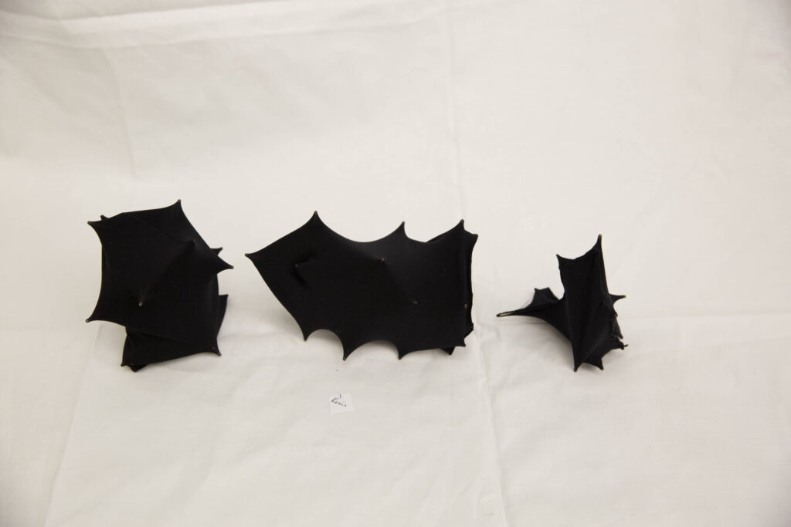
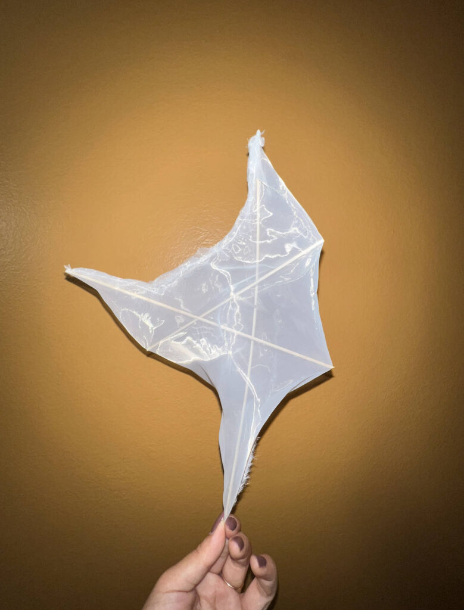
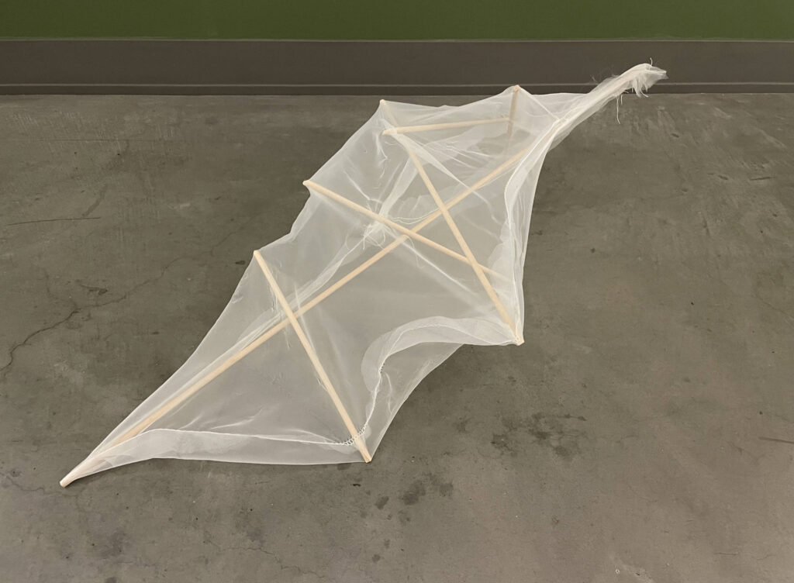
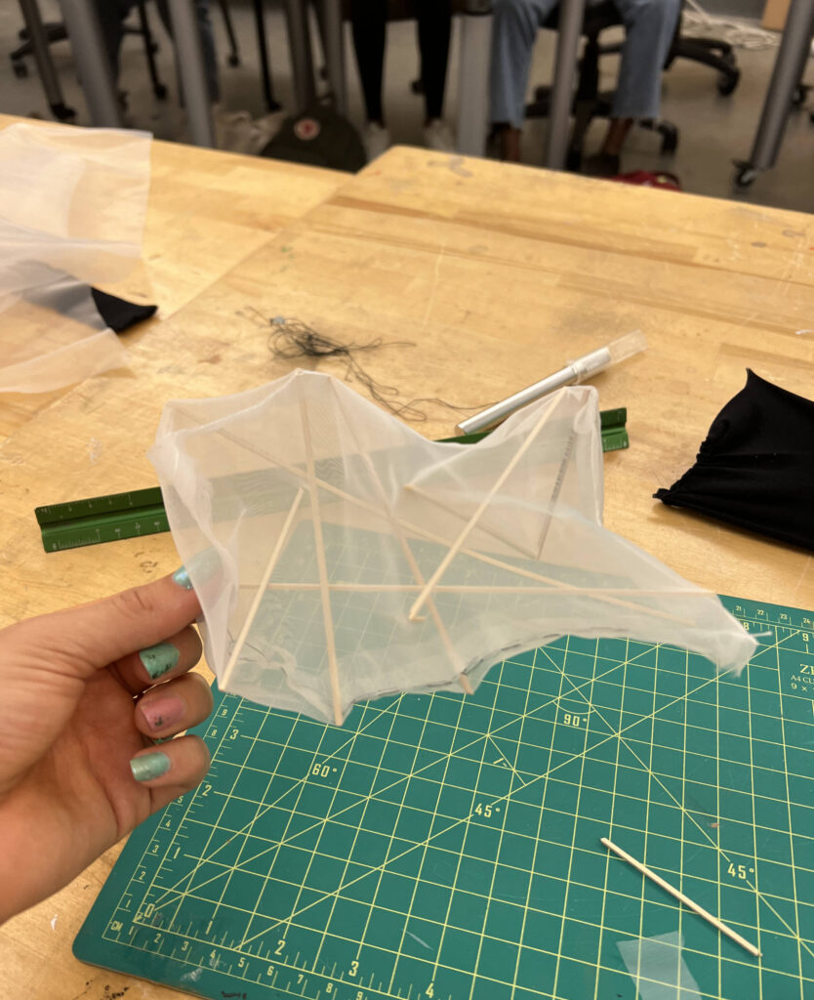
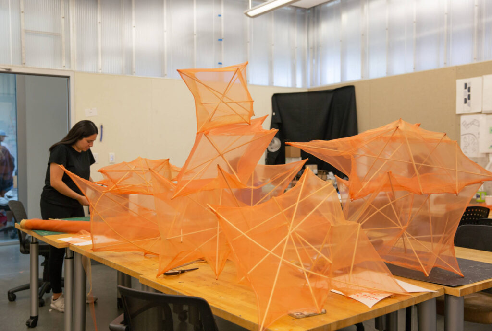
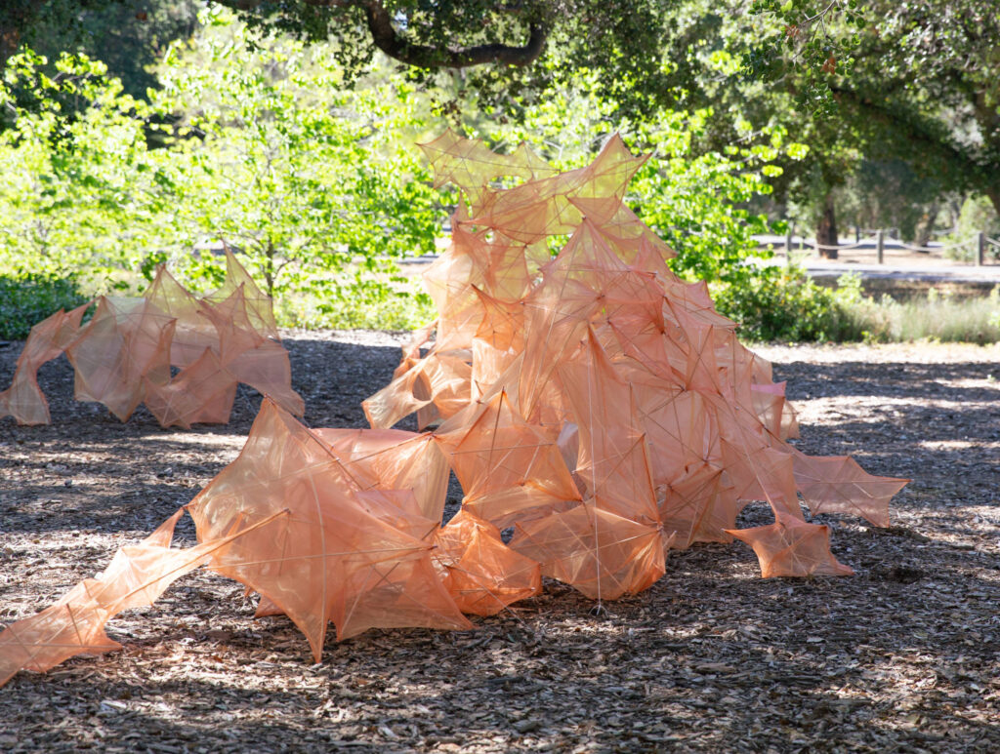
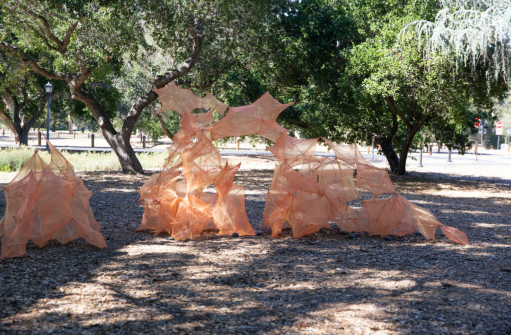

EPHEMERAL








Photo Credit
Katie Han
Student Participants
Jessica Gonzales, Ethan Petersen, Ryan Lian, Simba Xu, Aaron Adriano, Krain Chen, Dagny Carlsson, Maya Green, Willa Crowell, Kai Rayle, Elijah Ezralow, Constantinos Gallis, Theo Strauss, Kelsey Wang, Mariela Santelices, Julien Broussard, Katie Han, David Barron Dunn, Aisha Balogun, Alex Strong, Joseph McDonald
EPHEMERAL
STANFORD UNIVERSITY, 2022
Ephemeral was a design build installation, exploring the use of organza fabric and wood dowels to form tensegrity modules, in which the dowels acted as compressive members within tensile fabric cases. This course was co-taught with structural engineer Jun Sato. Students developed different structural units such as “bricks”, “claws” and “spines”, using small scale prototypes to investigate form and optimize structural performance. These modular units were then built at full scale and assembled into a full scale installation at the Anderson Collection on campus.
The diaphanous dual weave organza fabric used for the cases produced a reflective and evanescent surface in the light. Together, the forms defined an ephemeral yet powerful curved edge around a spiraling collective space.
© 2023 BACH ARCHITECTURE. All rights reserved. | 3752 20th Street, San Francisco, CA 94110 | (415) 425-8582 | info@bach-architecture.com